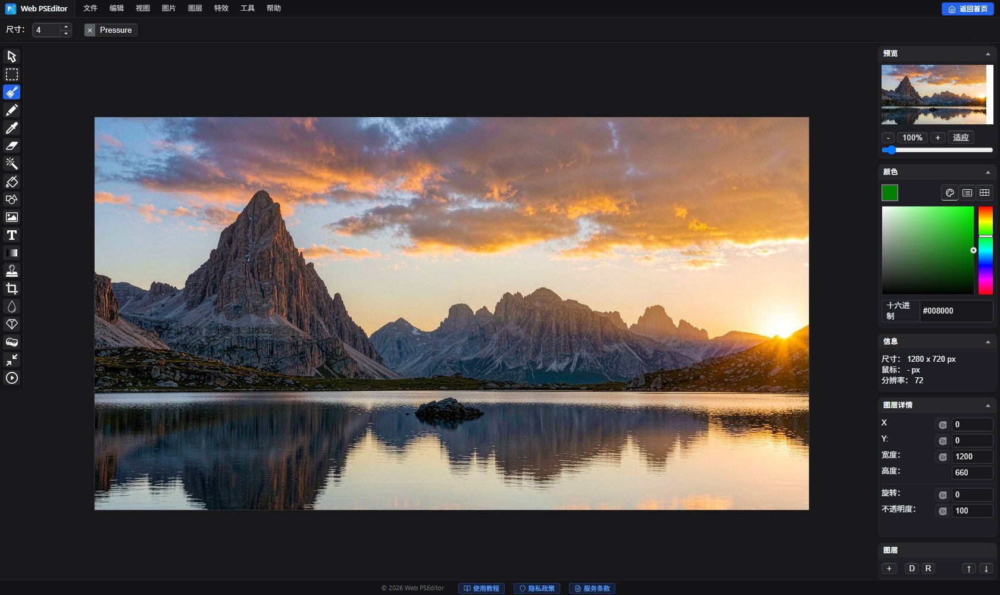

实战教程：如何在线给图片添加文字水印，防止被盗用
辛苦拍的照片、精心做的电商主图，发到网上第二天就被别人搬运盗用，连个署名都没有——这是每位创作者都遇过的糟心事。给图片加上文字水印，是最简单有效的防盗手段：别人即使转载，观者也能一眼看出来源。很多在线加水印工具需要把图片上传到对方服务器，商务图和未发布作品存在泄露风险；而使用 Web PSEditor，全部处理都在你的浏览器本地完成，图片从头到尾不会离开你的电脑。
先看效果：处理前 vs 处理后
第一步：打开编辑器并导入图片
打开 Web PSEditor，点击左上角 【文件】→【打开图片】，选择你要加水印的照片。图片载入后，界面右侧会显示画布信息与图层面板：

1. 点击左侧工具栏的 文字工具（T 图标），在画布上点击要放置水印的位置。
2. 输入你的署名，如：摄影 @你的名字，并在文字属性面板设置字号、颜色（建议白色或浅灰）。
3. 在右侧图层面板把该文字图层的 不透明度（Opacity）调至 60%~70%，水印清晰可见又不喧宾夺主。
4. 如需倾斜效果，选中文字图层后使用顶部 【编辑】→【自由变换】 旋转 -30° 左右。
单个水印很容易被裁掉，全图平铺才是防盗王牌：
1. 先按方法一做好一个文字水印图层。
2. 在图层面板复制该图层，拖动副本到新的位置；重复操作让水印铺满全图（本文效果图即为平铺样式）。
3. 全部摆好后，把每个水印图层的不透明度统一调至 30%~40%，视觉更通透。
4. 小技巧：按住 Shift 拖动可水平/垂直对齐，让排布更整齐。
点击 【文件】→【另存为】，选择格式：日常分享与电商图选 JPG（质量 85 以上）；需要保留透明背景的选 PNG。导出的图片自带水印，可直接发布。
相关教程推荐
打开编辑器，用你自己的照片按上述步骤加水印，全程无需注册、无需上传。